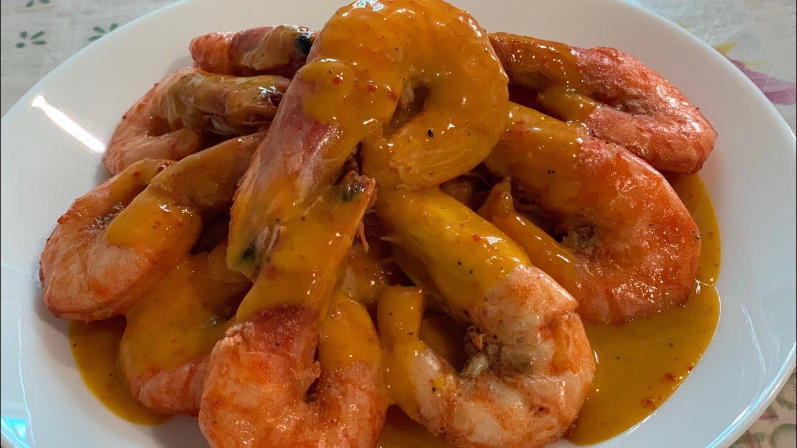

Panna Cotta Recipe
Ingredients:
- 2 cups heavy cream
- 1/2 cup whole milk
- 1/2 cup granulated sugar
- 2 teaspoons vanilla extract
- 2 1/4 teaspoons powdered gelatin
- 3 tablespoons cold water
- Fresh berries or fruit compote for topping
Instructions:
- In a small bowl, sprinkle the gelatin over cold water and let it bloom for 5 minutes.
- In a saucepan over medium heat, combine the heavy cream, milk, and sugar. Stir until the sugar dissolves (do not boil).
- Remove from heat and add the bloomed gelatin, stirring until completely dissolved.
- Mix in the vanilla extract and pour the mixture into serving cups.
- Refrigerate for at least 4 hours or until set.
- Top with fresh berries or fruit compote before serving. Enjoy!
Cooking Tips:
For a silkier texture, strain the mixture before pouring it into cups.
About Panna Cotta
Panna Cotta is a popular Italian dessert made from sweetened cream and thickened with gelatin. Its name means "cooked cream" in Italian, and it is often served with fruit, caramel, or chocolate sauce.
Gallery
Check out these mouth-watering Prawns Alavar photos!



Blog
Stay tuned for articles about dessert techniques, variations, and creative toppings for Panna Cotta!